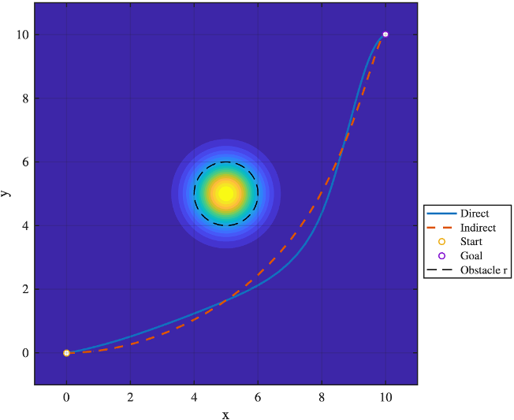

Optimal Obstacle-Avoiding Trajectory Design
This project studies a nonlinear optimal control problem for a simplified vehicle moving in a 2D plane. The goal is to drive the system from the initial state to the target while minimizing control effort, avoiding the obstacle region, and comparing different solution strategies including the indirect method, a direct method, and LQR around a nominal trajectory.
Project Assignment
The task is to formulate and solve a nonlinear optimal control problem for a simplified vehicle model with obstacle avoidance.
Vehicle Dynamics
Cost Function
Assumptions and Model Setup
This section is where you present the assumptions you made before solving the problem.
Modeling Assumptions
- The vehicle is modeled as a point mass moving in a 2D plane.
- The thrust input directly affects the longitudinal acceleration.
- The angular control input directly changes the heading angle.
- Drag is modeled with a quadratic velocity term.
- The obstacle is represented by a smooth Gaussian penalty rather than a hard constraint.
- The simplified dynamics neglect rotational inertia and higher-order actuator dynamics.
Obstacle Penalty
This smooth penalty makes paths near the obstacle more expensive and encourages the optimizer to bend the trajectory around the forbidden region.
Chosen Parameters
These are the parameters visible in your presentation. Replace any of them if your final report uses slightly different values.
Main Parameters
Methods Compared
The project compares three viewpoints: the indirect method, the direct method, and LQR around a nominal trajectory.
Single Shooting with PMP
In the indirect approach, the optimality conditions are derived from the Hamiltonian. The state is integrated forward, the costate is integrated backward, and the controls are updated using the stationarity condition.
Single Shooting
In the direct method, the control sequence is treated as the decision variable. The state evolution is computed by forward simulation, and the optimization is performed directly over the control parameters.
Linearization Around a Nominal Trajectory
For LQR, the system is linearized around the nominal trajectory. The controller then stabilizes deviations from that trajectory using the Riccati equation.
Implementation Logic
This is the algorithmic summary of how the indirect solution was implemented.
Workflow
- Start with an initial guess for the control profiles.
- Integrate the nonlinear state equations forward in time.
- Compute the terminal costate from the terminal penalty.
- Integrate the adjoint equations backward in time.
- Evaluate the Hamiltonian gradients with respect to the controls.
- Update the control input using gradient descent.
- Repeat until the optimality residual is sufficiently small.
Results
The figure below compares the direct and indirect trajectories and shows the obstacle field.
Trajectory Comparison
The start point is located at the origin and the target is at the upper-right corner. Both methods successfully steer the system around the obstacle region, but they generate slightly different paths due to the way the optimization is formulated and solved.
Video Demonstration
Add your video here so visitors can see the motion or the comparison dynamically.
Simulation Video
This video can be used to show how the vehicle evolves over time and how the trajectory bends away from the obstacle while converging to the target.
Discussion
This is the part where you explain what the result means instead of only showing figures.
What the Result Shows
The optimized trajectory avoids the high-penalty area around the obstacle while still reaching the desired target. The comparison also suggests that the indirect and direct approaches are both valid, although they may differ in sensitivity, computational effort, and final path shape.
Why It Matters
This project connects optimal control theory to a concrete motion-planning problem. It shows how the trade-off between control effort, terminal accuracy, and obstacle avoidance can be embedded directly inside the cost function.
Professor's Requested Extensions
Keep this section because it shows that you understand what could be done beyond the base solution.
Possible Extensions
- Augment the states so the target is reached with zero acceleration.
- Replace the obstacle penalty with a hard state constraint.
- Solve the minimum-time version of the problem.
- Use a more detailed vehicle model, for example including rotational inertia.
- Solve the same problem through indirect single shooting.
- Implement neighboring optimal control to reject disturbances.
Optional Extra Section
You can also add a link to code, slides, or a PDF report.